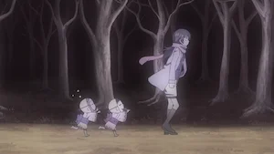
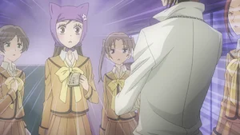
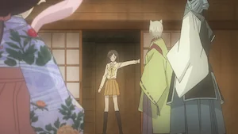

Kamisama Hajimemashita
Kamisama Hajimemashita es un anime de comedia romántica y fantasía basado en el manga de Julietta Suzuki. La historia sigue a Nanami Momozono, una estudiante que queda sin hogar después de que su padre desaparece por sus deudas. Tras ayudar a un extraño, recibe la responsabilidad de convertirse en la nueva deidad de un santuario. Allí conoce a Tomoe, un poderoso espíritu zorro que inicialmente se niega a servirla, dando inicio a una historia llena de romance, humor y elementos sobrenaturales.
⭐ Calificación: 8.2/10



Capítulo 1
Nanami pierde su hogar debido a las deudas de su padre. Tras ayudar a un hombre desconocido, recibe la responsabilidad de convertirse en la nueva diosa de un santuario y conoce al espíritu zorro Tomoe.

Capítulo 2
Nanami intenta adaptarse a su nueva vida como deidad. Mientras aprende sus responsabilidades divinas, trata de ganarse la confianza y cooperación de Tomoe.

Capítulo 3
Nanami comienza a enfrentarse a problemas sobrenaturales y descubre más sobre el mundo de los espíritus. Poco a poco, su relación con Tomoe empieza a fortalecerse.